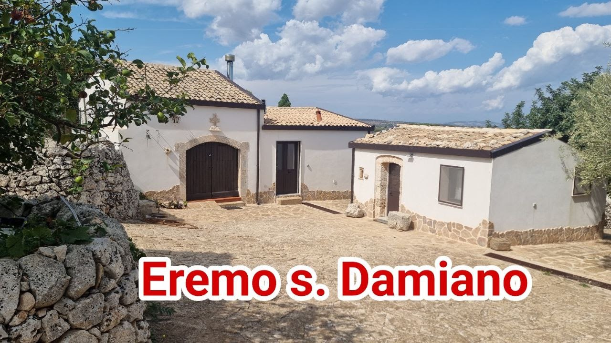
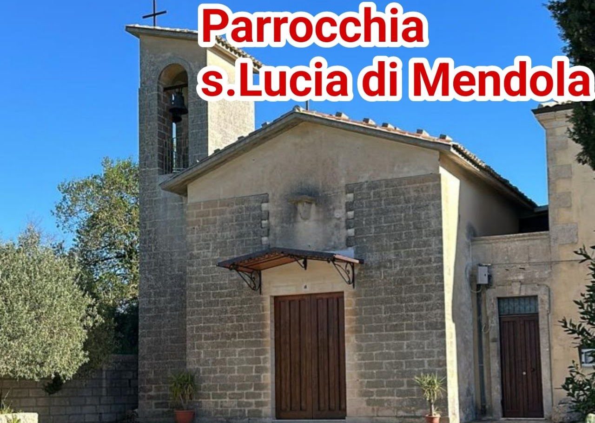
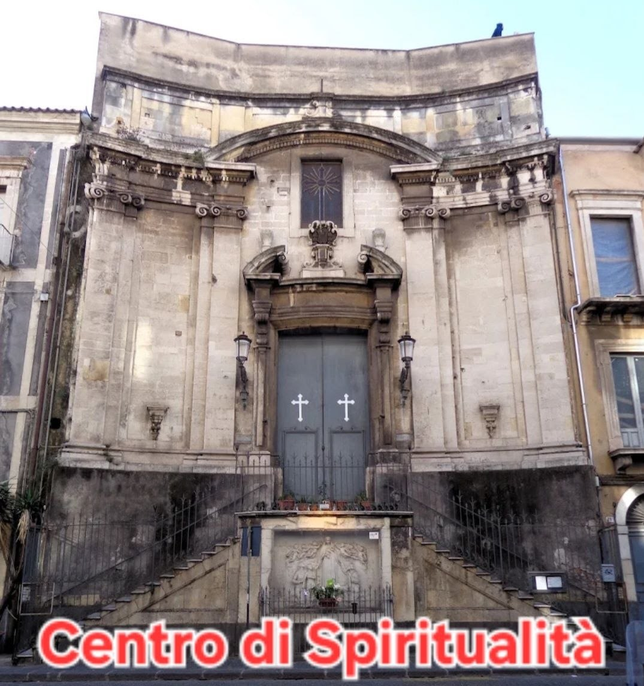

Dove siamo

L'Eremo San Damiano è la Casa Madre della Fraternità e si trova a 3 km da Canicattini Bagni, in Diocesi di Noto. Una vecchia masseria ristrutturata e trasformata in luogo di accoglienza e preghiera. In questa oasi di silenzio, immersa in otto ettari di terreno alberato, si svolge la parte contemplativa della nostra vita. Si offre anche un luogo di rifugio e rigenerazione spirituale per tutti coloro che ne sentano l'esigenza.

La Parrocchia di Santa Lucia di Mendola è il luogo dove svolgiamo il nostro servizio pastorale. È situata a ridosso di un importante ed antico Sito Archeologico, immersa nel verde dei campi della Contrada Santa Lucia ai margini della Diocesi di Noto a 4 Km da Palazzolo Acreide (SR) sulla SP 24. Nella casa parrocchiale si accolgono, quando capita, anche dei piccoli gruppi. La Patrona si festeggia la prima settimana di settembre.

Il Centro di Spiritualità ss. Francesco e Teresina si trova a Catania presso la Chiesa di Santa Teresa in via Antonino di Sangiuliano, 219. Si offre un servizio di celebrazioni, accoglienza, confessioni ed Ascolto secondo i seguenti orari:
Giovedì: 17:00 - 20:30 (*) (19:30 ADORAZIONE EUCARISTICA)
Venerdì: 10:00 - 12:30 / 17:00 - 23:30 (**) (19:15 - S. ROSARIO) (20:00 - S. MESSA E INCONTRO)
Sabato: 10:00 - 12:30 / 17:00 - 23:30 (**) (19:15 - S. ROSARIO) (20:00 - S. MESSA)
Domenica: 09:00 - S. MESSA